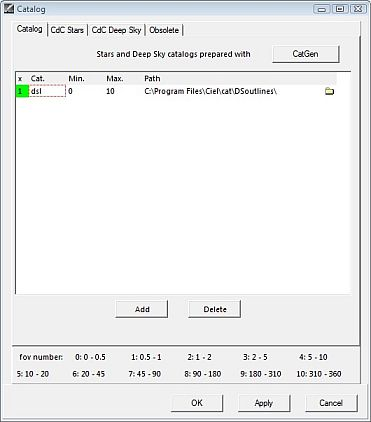
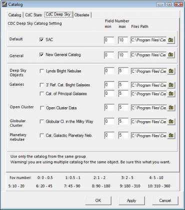

Catalog
From the menu: Setup → Catalog
The Catalog dialog box has four tabs:
Catalog

From the menu: Setup → Catalog → Catalog
Here you can add and activate all kinds of external catalogs previously built for SkyCharts with the CatGen utility. You can invoke Catgen by the CatGen button at the top right. Read more about the new creation or adaptation of existing catalogs for SkyCharts with CatGen here.
{kind=link}
Before you can add a new catalog, you need to add a line where you will describe its configuration. (You could also remove a selected line by pressing the “Delete” button.)
Next, you need to set the path to your new catalog. Click the directory icon at the right of the line to set the path. You can have your directory with your external catalog anywhere on your computer, but it is generally a good idea to place them together as subdirectories of the cat directory in the SkyCharts installation directory. In the directory of your catalog there must be a .hdr file whith the description of this catalog. Select the .hdr file. In case of an error, the first cell on the line is boxed in red.
In the min field, enter the field of vision number to set the smallest fields of vision that you want your catalog to be used for in SkyCharts. (For your current FOV number settings, have a look at the bottom of the dialog box.) A good choice to start with can be to put a 0 here, otherwise zooming in can result in the loss of objects that were visible in a larger Field of vision. In the max field, enter the largest field of view number for which you want to use this catalog.
Click the red cell at the left of the line to activate the catalog. If all is set properly, it will switch to green.
CdC Stars
 From the menu: Setup → Catalog → CdC Stars
From the menu: Setup → Catalog → CdC Stars
By this tab you can activate SkyCharts to display the stars from your catalogs. Simply place a check in the appropriate checkboxes. In the standard situation, SkyCharts will search the catalogs in their preconfigured paths where SkyCharts asumes the appropriate catalogs reside. If SkyCharts can't find the catalog in the configured file path, the file path input area will display a red colour. You need to set this right before SkyCharts can use your catalog.
Don´t panic if you can´t find the proper path. Because of their sizes, not all catalogs came with the SkyCharts installation, maybe you need to install the catalog. Click here for further reading about installation of extra catalogs. The Deepky 2000 is a package of catalogs that isn't available for free, you can purchase it from here.
In the min field, enter the field of vision number to set the smallest fields of vision that you want your catalog to be used in SkyCharts. (For your current FOV number settings, have a look at the bottom of the dialog box.) A good choice to start with can be to put a 0 here, otherwise zooming in can result in the loss of objects that were visible in a larger Field of vision. In the max field, enter the largest field of view number for which you want to use this catalog.
If you are using multiple catalogs, you can enhance the performance of SkyCharts by avoiding the usage of multiple catalogs in the same field of view.
Catalogs marked with “pm” contain “proper motion” information. The program uses the proper motion to calculate the position of the object for the configured date.
It is possible to display the proper motion by showing the displacement for a period of 1-9999 years in the form of a line. See Display Lines.
You can configure how the stars are displayed by the tab Color from the menu by Setup → Display. You can switch the display of stars on or off by pressing the  icon of the object bar.
icon of the object bar.
CdC Deep Sky

From the menu: Setup → Catalog → CdC Deep Sky
By this tab you can activate SkyCharts to display the deep sky objects from your catalogs. Simply place a check in the appropriate checkboxes. In the standard situation, SkyCharts will search the catalogs in their preconfigured paths where SkyCharts asumes the appropriate catalogs reside. If SkyCharts can't find the catalog in the configured file path, the file path input area will display a red colour. You need to set this right before SkyCharts can use your catalog.
Don´t panic if you can´t find the proper path. Because of their sizes, not all catalogs came with the SkyCharts installation, maybe you need to install the catalog. Click here for further reading about installation of extra catalogs.
In the min field, enter the field of vision number to set the smallest fields of vision that you want your catalog to be used in SkyCharts. (For your current FOV number settings, have a look at the bottom of the dialog box.) A good choice to start with can be to put a 0 here, otherwise zooming in can result in the loss of objects that were visible in a larger Field of vision. In the max field, enter the largest field of view number for which you want to use this catalog.
For a better performance and to avoid duplicates of objects to be displayed, you better do not use multiple catalogs for the same type of deep sky objects in the same field of vision. As indicated at the bottom of the tab, it is recommended to use catalogs from only one of the three catalog groups. You can choose to mix those groups, but because of the duplicates as a result of the overlapping a warning message will be displayed.
You can choose how to display the symbols of deep sky objects by the tab Deep-sky Colour by the menu Setup → Display. You can switch the display of deep sky objects on or off by pressening the  icon of the object bar.
icon of the object bar.
{kind=link}
Obsolete
 From the menu: Setup → Catalog → Obsolete
From the menu: Setup → Catalog → Obsolete
If you want to use your obsolete catalogs, specify them in this tab the same way you did in the CdC Stars and CdC Deep Sky tabs.